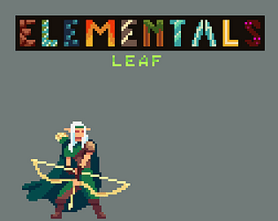

Leaf Ranger
Abilities:
Vine Whip: Conjures vines from nearby foliage to ensnare enemies, restraining their movements and leaving them vulnerable to attacks.
Photosynthesis Aura: Surrounds themselves with a revitalizing aura of energy, drawing strength and vitality from the sun's rays and replenishing health over time.
Thorn Barrage: Unleashes a barrage of razor-sharp thorns from the surrounding vegetation, striking multiple targets with precision and causing damage over a wide area.
Stealth and Mobility:
Leaf Ranger moves with grace and agility, seamlessly blending into their surroundings and using the dense foliage to their advantage. They can swiftly traverse through wooded terrain, evading detection and launching surprise attacks on unsuspecting foes.
Weaknesses:
While Leaf Ranger thrives in forested environments, they may struggle in open spaces devoid of vegetation. Additionally, their reliance on plant-based abilities leaves them vulnerable to adversaries who possess control over fire or have the ability to manipulate plant life themselves.
Overall, Leaf Ranger serves as a guardian of the natural world, defending it against threats and preserving the balance between civilization and wilderness.